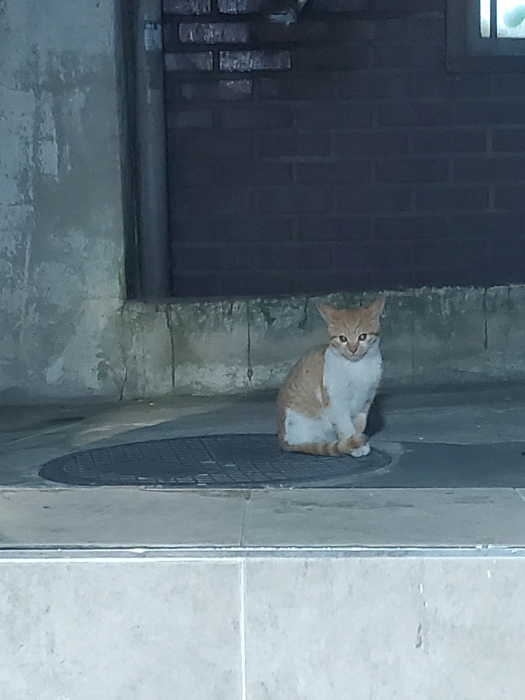
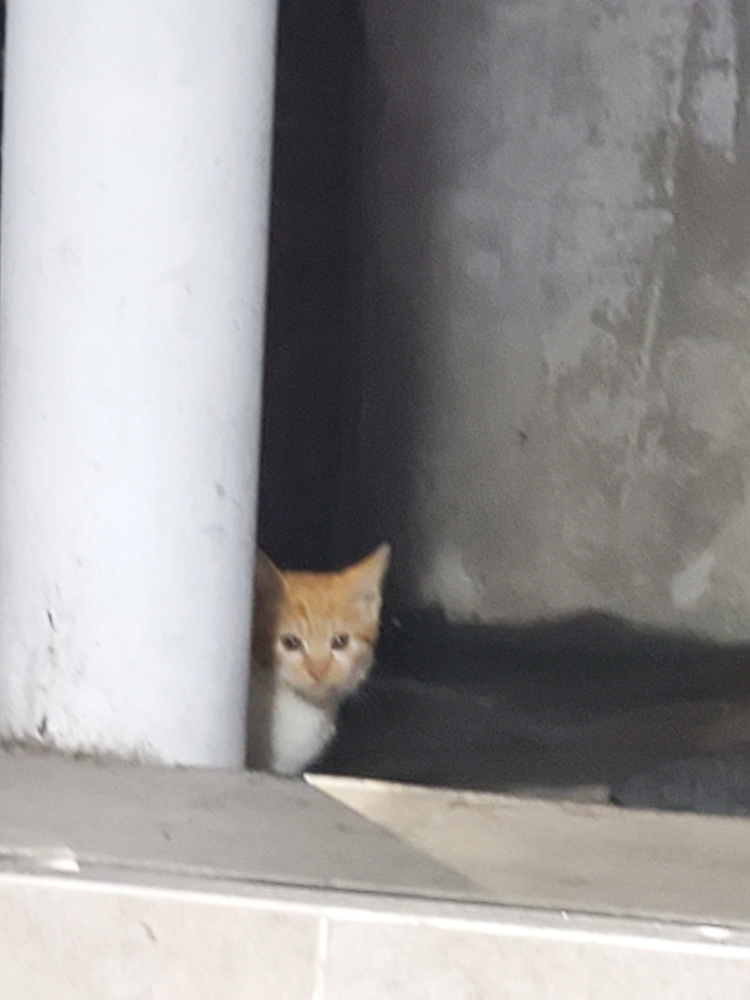
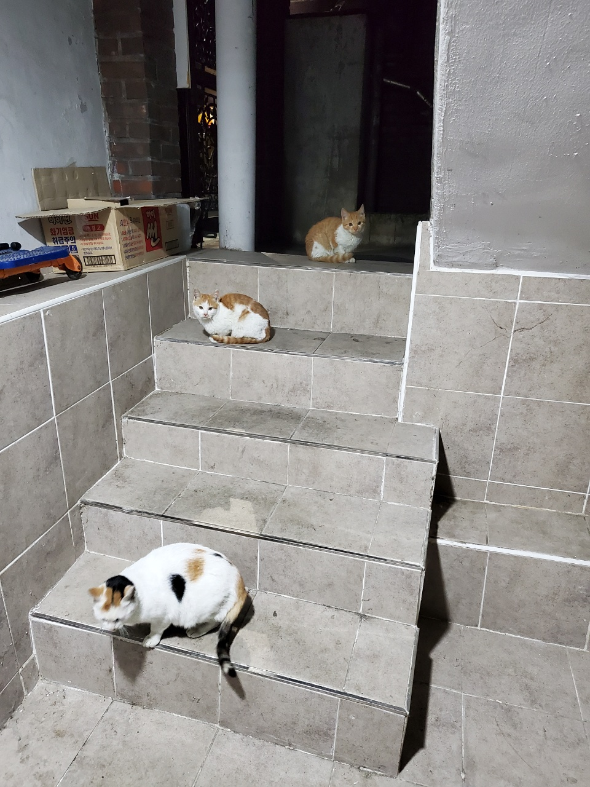
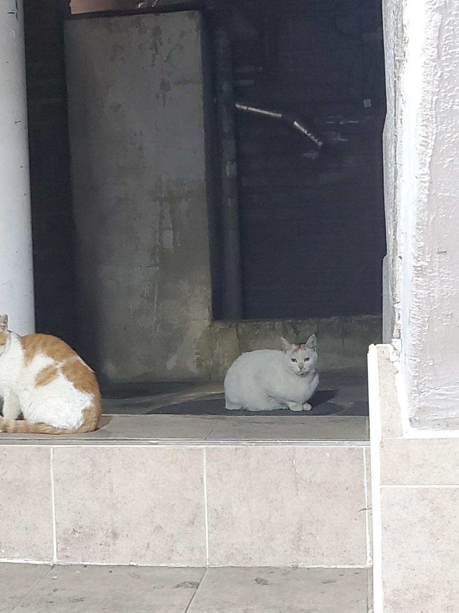
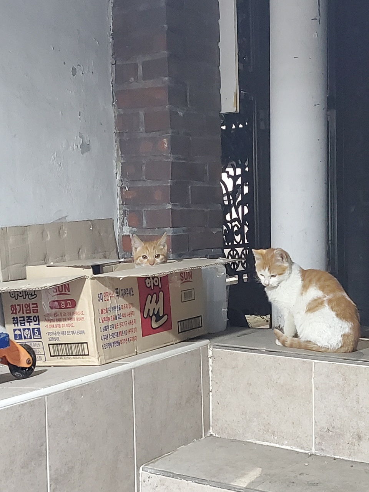
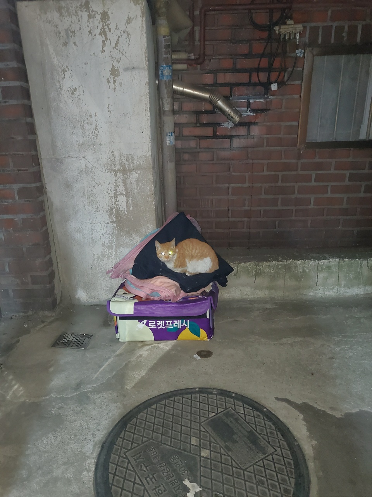

 
이목구비가 너무너무 귀엽다
얼굴이 저렇게 치즈인데 가슴털은 하얗고 ... 작고 ... 귀여버 ... 표정 넘 개구지게 생김 ㅜㅜ 크기 순으로 큰 녀석이 웬 작은 놈이 투다. 투는 호기심이 엄청 많아서 가끔 혼자도 찾아온다. 원래 웬은 겁시 많아서 혼자 마주치면 빤스런했는데 요새는 좀 컸다고 혼자 잘 온다.
  
너희도 건강혀라~
웬투도 엄청 컸다. 아마 막내는 고양이별로 갔겠지 ...? ㅜ 막내인지는 모르겠지만 하튼 ... 웬투는 이제 슬슬 독립할 시기인데 촐랑이가 보내지를 않는다. 차라리 다행인게 셋이 같이 다녀야 한꺼번에 중성화하기가 쉽다. 그치만 언제 중성화가 가능할지를 모르겠다. 날도 점점 풀리고 이 녀석들도 이곳 저곳 기가 막히게 따뜻한 곳을 잘 찾아서 겨울을 나고 있다. 고양이 아니랄까봐~
걱정도 많고 ... 통장 출혈도 은근 있던 길냥 가족 사료 급여기로서의 겨울이었지만 이제 봄이 오니까 걱정이 조금 줄지 않을까? 여름엔 촐랑이가 혼자 다니길래 죽은 줄 알았는데 이렇게 장성해줘서 고마울 따름이다. 세상 길냥이들이 혐오와 학대 당하지 않고 모두 건강하고 평온한 삶을 누린다면 좋겠다.
세상엔 아직도 자기보다 약한 존재를 이유없이 괴롭히는 쓰레기들이 많다. 다 죽여버리고 싶지만 그러긴 힘드니 내 선에서 좋은 일을 해야겠다. 동물권행동 카라 홈페이지. 유기동물 입양 포인핸드 홈페이지.